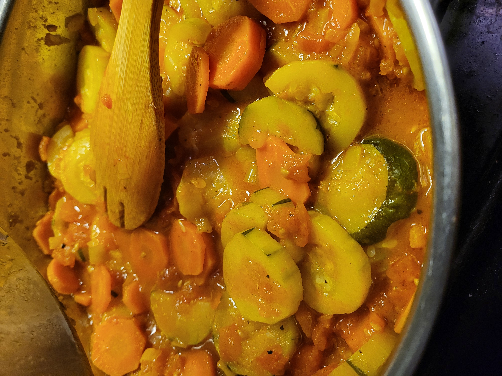

Courgette Recipe

Description
Courgette is a perfect dish that you can have warm or cold.
Ingredients
- 2x Courgette
- Ui
- 3 of 4 tomaten
- tomaten pasta
- 1 wortel
- Olijf olie
- Zout
Steps
- Dice the onion
- Add olie on the pan, once it's warm enough add the onions.
- Meanwhile cut the wortel.
- Add the wortel. While it's getting wat gaar cut the courgette and tomatoes.
- Add the tomaten pasta, stir
- Add courgette and tomaten. stir a bit and add some salt and then put the lit on and leave it for about 30 mins.
- It should be done. No, there is no need to add any water!
Home